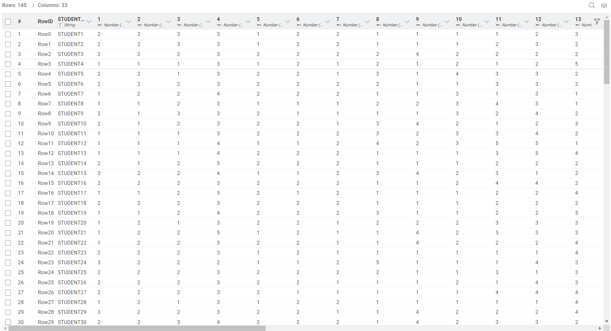
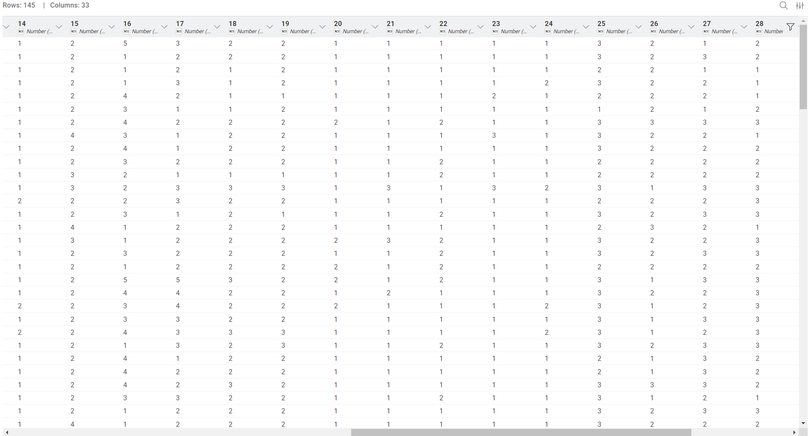
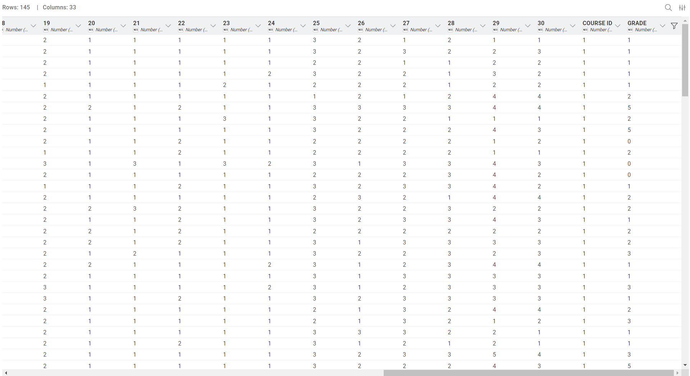
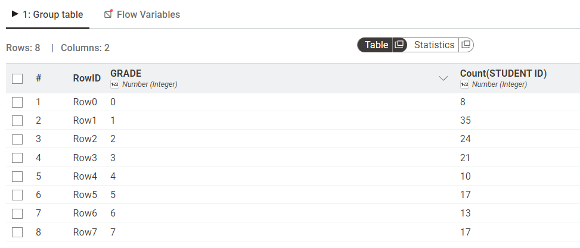
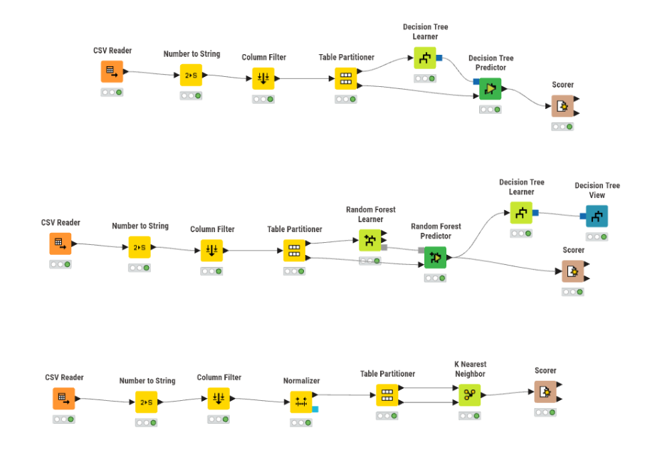
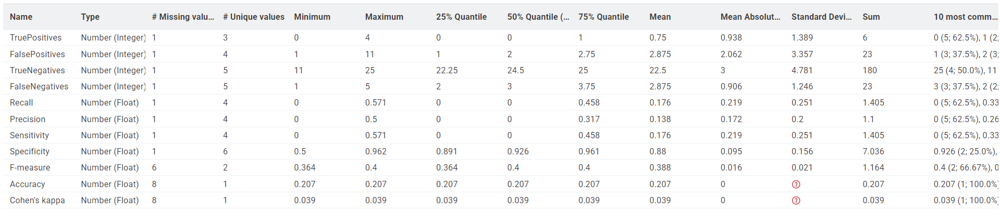
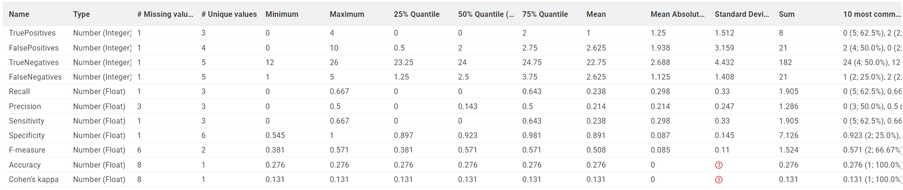
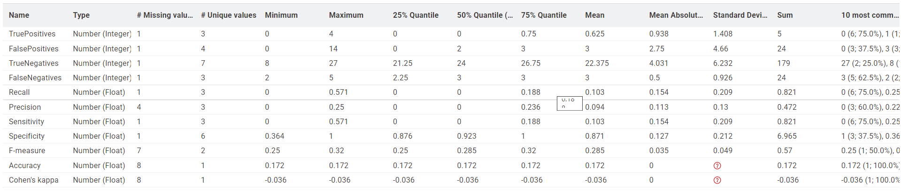
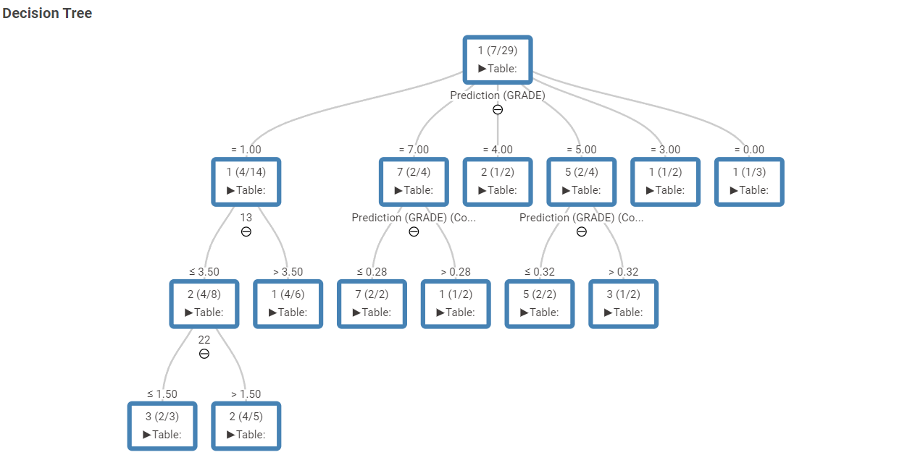

Analisis Performa Mahasiswa Menggunakan Algoritma Decision Tree, K-Nearest Neighbor, dan Random Forest#
Pendahuluan#
Perkembangan teknologi informasi memungkinkan pemanfaatan teknik data mining untuk menganalisis dan memprediksi berbagai fenomena, termasuk performa akademik mahasiswa. Prediksi performa mahasiswa dapat membantu institusi pendidikan dalam memahami faktor-faktor yang mempengaruhi hasil belajar sehingga dapat digunakan sebagai dasar pengambilan keputusan.
Pada penelitian ini digunakan dataset Higher Education Students Performance Evaluation yang diperoleh dari UCI Machine Learning Repository. Dataset tersebut berisi berbagai atribut yang berkaitan dengan karakteristik mahasiswa, kondisi keluarga, serta kebiasaan belajar yang digunakan untuk memprediksi nilai akhir mahasiswa.
Penelitian ini bertujuan untuk membandingkan performa tiga algoritma klasifikasi, yaitu Decision Tree, K-Nearest Neighbor (KNN), dan Random Forest dalam memprediksi nilai akhir mahasiswa.
Dataset#
Dataset yang digunakan berasal dari Higher Education Students Performance Evaluation yang tersedia pada UCI Machine Learning Repository.
Tampilan Dataset#



Gambar 1. Tampilan dataset Higher Education Students Performance Evaluation yang digunakan dalam penelitian.
Karakteristik dataset:
Dataset terdiri dari atribut yang menggambarkan karakteristik mahasiswa, kondisi keluarga, kebiasaan belajar, serta performa akademik sebelumnya. Beberapa contoh atribut yang digunakan antara lain usia mahasiswa, jenis kelamin, jam belajar per minggu, frekuensi membaca, kehadiran di kelas, kebiasaan mencatat materi, serta IPK semester sebelumnya.
Jumlah data: 145 mahasiswa
Jumlah atribut awal: 33 atribut
Target: GRADE
Jumlah kelas target: 8 kelas (0–7)
Keterangan kelas target:
GRADE |
Kategori |
|---|---|
0 |
Fail |
1 |
DD |
2 |
DC |
3 |
CC |
4 |
CB |
5 |
BB |
6 |
BA |
7 |
AA |
Target GRADE digunakan sebagai variabel yang akan diprediksi oleh model klasifikasi.
Distribusi Kelas Target#
Distribusi data pada setiap kelas GRADE ditunjukkan pada tabel berikut.
GRADE |
Jumlah Data |
|---|---|
0 |
8 |
1 |
35 |
2 |
24 |
3 |
21 |
4 |
10 |
5 |
17 |
6 |
13 |
7 |
17 |

Gambar 2. Distribusi jumlah data pada setiap kategori GRADE menggunakan node GroupBy KNIME.
Berdasarkan distribusi tersebut, terlihat bahwa jumlah data pada setiap kelas tidak sepenuhnya seimbang. Kelas GRADE 1 memiliki jumlah data paling banyak yaitu 35 data, sedangkan GRADE 0 hanya memiliki 8 data.
Ketidakseimbangan distribusi kelas ini dapat mempengaruhi performa model klasifikasi karena beberapa kelas memiliki jumlah contoh yang lebih sedikit untuk dipelajari oleh algoritma. Kondisi tersebut menjadi salah satu faktor yang berkontribusi terhadap rendahnya nilai accuracy yang diperoleh pada penelitian ini.
Metodologi#
Data Preprocessing#
Sebelum proses pemodelan dilakukan beberapa tahap preprocessing data sebagai berikut.
1. Konversi Target#
Kolom GRADE dikonversi dari tipe numerik menjadi tipe kategorikal (String) menggunakan node Number to String pada KNIME agar dapat digunakan sebagai target klasifikasi.
2. Penghapusan Atribut#
Atribut berikut dihapus dari dataset:
STUDENT ID
COURSE ID
Alasan penghapusan:
STUDENT ID hanya merupakan identitas mahasiswa dan tidak memiliki nilai prediktif terhadap performa akademik.
COURSE ID merupakan identitas mata kuliah dan tidak merepresentasikan karakteristik mahasiswa sehingga berpotensi menyebabkan bias pada model klasifikasi.
3. Normalisasi Data#
Normalisasi Min-Max diterapkan pada algoritma K-Nearest Neighbor karena algoritma tersebut menggunakan perhitungan jarak Euclidean. Tanpa normalisasi, atribut dengan rentang nilai yang lebih besar dapat mendominasi perhitungan jarak sehingga hasil klasifikasi menjadi kurang optimal.
4. Pembagian Data#
Dataset dibagi menjadi:
Data Training: 80%
Data Testing: 20%
Dengan total 145 data, diperoleh sekitar 116 data training dan 29 data testing.
Pembagian data dilakukan menggunakan metode Stratified Sampling berdasarkan atribut GRADE. Sebelum proses pembagian data, atribut GRADE dikonversi menjadi tipe String agar dapat dikenali sebagai class label oleh KNIME.
Stratified Sampling digunakan untuk menjaga proporsi setiap kelas GRADE pada data training dan data testing. Dengan demikian distribusi kelas pada kedua subset data tetap representatif terhadap distribusi data asli sehingga proses evaluasi model menjadi lebih adil.
Algoritma yang Digunakan#
Decision Tree#
Decision Tree merupakan algoritma klasifikasi yang membentuk struktur pohon berdasarkan atribut yang memiliki kemampuan terbaik dalam membedakan kelas data. Algoritma ini mudah dipahami karena menghasilkan aturan keputusan dalam bentuk pohon.
K-Nearest Neighbor (KNN)#
KNN melakukan klasifikasi berdasarkan kedekatan suatu data terhadap sejumlah tetangga terdekat menggunakan perhitungan jarak.
Parameter yang digunakan:
K = 5
Euclidean Distance
Min-Max Normalization
Random Forest#
Random Forest merupakan metode ensemble yang menggabungkan banyak pohon keputusan untuk meningkatkan stabilitas dan akurasi prediksi.
Parameter yang digunakan:
Number of Trees = 100
Split Criterion = Information Gain Ratio
Implementasi Menggunakan KNIME#
Workflow penelitian terdiri dari beberapa tahapan utama yaitu import data, preprocessing, pembagian data, pemodelan, dan evaluasi.
Workflow KNIME#

Gambar 3. Workflow utama penelitian menggunakan KNIME.
Tahapan workflow yang digunakan adalah sebagai berikut:
Import dataset menggunakan CSV Reader.
Konversi atribut GRADE menggunakan Number to String.
Menghapus atribut STUDENT ID dan COURSE ID menggunakan Column Filter.
Membagi data menggunakan Table Partitioner dengan metode Stratified Sampling.
Melakukan pemodelan menggunakan Decision Tree, Random Forest, dan K-Nearest Neighbor.
Melakukan evaluasi menggunakan node Scorer.
Hasil Pengujian#
Evaluasi model dilakukan menggunakan metrik Accuracy dan Cohen’s Kappa.
Accuracy#
Algoritma |
Accuracy |
|---|---|
Decision Tree |
20.7% |
K-Nearest Neighbor |
17.2% |
Random Forest |
27.6% |
Accuracy menunjukkan persentase data testing yang berhasil diprediksi dengan benar oleh model. Semakin tinggi nilai accuracy, semakin baik kemampuan model dalam melakukan klasifikasi.
Cohen’s Kappa#
Algoritma |
Cohen’s Kappa |
|---|---|
Decision Tree |
0.039 |
K-Nearest Neighbor |
-0.036 |
Random Forest |
0.131 |
Cohen’s Kappa digunakan untuk mengukur tingkat kesesuaian antara hasil prediksi model dengan data aktual dengan mempertimbangkan kemungkinan kesesuaian yang terjadi secara acak. Semakin tinggi nilai Kappa, semakin baik kualitas model.
Hasil Evaluasi Decision Tree#

Gambar 4. Hasil evaluasi Decision Tree menggunakan Accuracy Statistics.
Hasil Evaluasi Random Forest#

Gambar 5. Hasil evaluasi Random Forest menggunakan Accuracy Statistics.
Hasil Evaluasi K-Nearest Neighbor#

Gambar 6. Hasil evaluasi K-Nearest Neighbor menggunakan Accuracy Statistics.
Visualisasi Pohon Keputusan#

Gambar 7. Struktur pohon keputusan yang dihasilkan oleh algoritma Decision Tree.
Berdasarkan visualisasi pohon keputusan, terlihat bahwa beberapa atribut digunakan sebagai node utama dalam proses pemisahan data. Hal ini menunjukkan bahwa atribut tersebut memiliki pengaruh yang lebih besar dalam proses klasifikasi dibandingkan atribut lainnya.
Struktur pohon yang relatif sederhana menunjukkan bahwa jumlah data yang terbatas menyebabkan pembentukan aturan keputusan yang tidak terlalu kompleks. Kondisi ini juga dapat mempengaruhi kemampuan model dalam melakukan generalisasi terhadap data baru.
Analisis Hasil#
Berdasarkan hasil pengujian, algoritma Random Forest menghasilkan performa terbaik dengan accuracy sebesar 27.6%.
Random Forest mampu memberikan hasil yang lebih baik dibandingkan Decision Tree karena menggunakan pendekatan ensemble yang menggabungkan banyak pohon keputusan sehingga mampu mengurangi overfitting dan meningkatkan kemampuan generalisasi model.
Hal ini juga terlihat dari nilai Cohen’s Kappa yang lebih tinggi dibandingkan dua algoritma lainnya, yang menunjukkan bahwa Random Forest menghasilkan prediksi yang lebih konsisten dan lebih baik dibandingkan prediksi acak.
Decision Tree memperoleh accuracy sebesar 20.7%. Meskipun mudah dipahami dan diinterpretasikan, algoritma ini cenderung lebih sensitif terhadap variasi data sehingga performanya lebih rendah dibandingkan Random Forest.
K-Nearest Neighbor memperoleh accuracy sebesar 17.2%, yang merupakan nilai terendah di antara ketiga algoritma. Hal ini kemungkinan disebabkan oleh jumlah data yang relatif sedikit serta banyaknya atribut kategorikal yang direpresentasikan dalam bentuk numerik sehingga pendekatan berbasis jarak menjadi kurang optimal.
Meskipun Random Forest menghasilkan performa terbaik, nilai Cohen’s Kappa yang diperoleh masih tergolong rendah. Hal ini menunjukkan bahwa tingkat kesesuaian antara hasil prediksi dan data aktual belum jauh lebih baik dibandingkan prediksi acak. Namun demikian, Random Forest tetap menunjukkan kualitas prediksi yang lebih baik dibandingkan Decision Tree dan KNN.
Pembahasan#
Dengan jumlah data hanya 145 mahasiswa dan delapan kategori nilai yang berbeda, rata-rata jumlah data pada setiap kelas relatif sedikit. Kondisi ini menyebabkan model kesulitan mempelajari pola yang kuat untuk setiap kategori nilai sehingga berdampak pada rendahnya akurasi yang diperoleh.
Nilai akurasi yang diperoleh seluruh algoritma masih tergolong rendah. Beberapa faktor yang memengaruhi hasil tersebut antara lain:
Dataset hanya terdiri dari 145 data mahasiswa sehingga jumlah data pelatihan relatif terbatas.
Target GRADE memiliki delapan kelas berbeda (0–7), sehingga proses klasifikasi menjadi lebih kompleks dibandingkan klasifikasi biner.
Distribusi data antar kelas tidak sepenuhnya seimbang sehingga model mengalami kesulitan dalam mempelajari pola untuk setiap kategori nilai.
Sebagian besar atribut merupakan hasil pengkodean kategori menjadi angka sehingga hubungan antar atribut tidak selalu merepresentasikan hubungan numerik yang sebenarnya.
Meskipun nilai akurasi yang diperoleh relatif rendah, hasil ini masih dapat diterima karena dataset memiliki jumlah data yang terbatas dan terdiri dari delapan kelas target yang berbeda. Semakin banyak jumlah kelas yang harus diprediksi, semakin tinggi tingkat kesulitan proses klasifikasi yang dihadapi model.
Dari ketiga algoritma yang diuji, Random Forest menunjukkan performa terbaik sehingga dapat dipertimbangkan sebagai model yang paling sesuai untuk dataset ini.
Kelebihan dan Keterbatasan Penelitian#
Kelebihan#
Menggunakan tiga algoritma klasifikasi yang berbeda.
Menggunakan proses preprocessing yang sesuai dengan karakteristik data.
Melakukan evaluasi menggunakan Accuracy dan Cohen’s Kappa.
Keterbatasan#
Dataset hanya terdiri dari 145 data mahasiswa.
Distribusi data antar kelas tidak sepenuhnya seimbang.
Target memiliki delapan kelas yang cukup sulit diprediksi.
Belum dilakukan optimasi parameter pada setiap algoritma.
Kesimpulan#
Penelitian ini membandingkan tiga algoritma klasifikasi yaitu Decision Tree, K-Nearest Neighbor, dan Random Forest untuk memprediksi performa mahasiswa menggunakan dataset Higher Education Students Performance Evaluation.
Berdasarkan hasil pengujian diperoleh:
Decision Tree menghasilkan accuracy sebesar 20.7%.
K-Nearest Neighbor menghasilkan accuracy sebesar 17.2%.
Random Forest menghasilkan accuracy sebesar 27.6%.
Dari ketiga algoritma yang diuji, Random Forest memberikan performa terbaik dengan accuracy tertinggi dan nilai Cohen’s Kappa terbesar.
Dengan demikian dapat disimpulkan bahwa Random Forest merupakan algoritma yang paling efektif untuk melakukan prediksi performa mahasiswa pada dataset yang digunakan dalam penelitian ini.
Daftar Pustaka#
[1] Yilmaz, H., & Sekeroglu, M. S. (2023). Higher Education Students Performance Evaluation Dataset. UCI Machine Learning Repository.
[2] Han, J., Kamber, M., & Pei, J. (2012). Data Mining: Concepts and Techniques (3rd Edition). Morgan Kaufmann.
[3] UCI Machine Learning Repository. Higher Education Students Performance Evaluation Dataset. https://archive.ics.uci.edu/dataset/856/higher+education+students+performance+evaluation